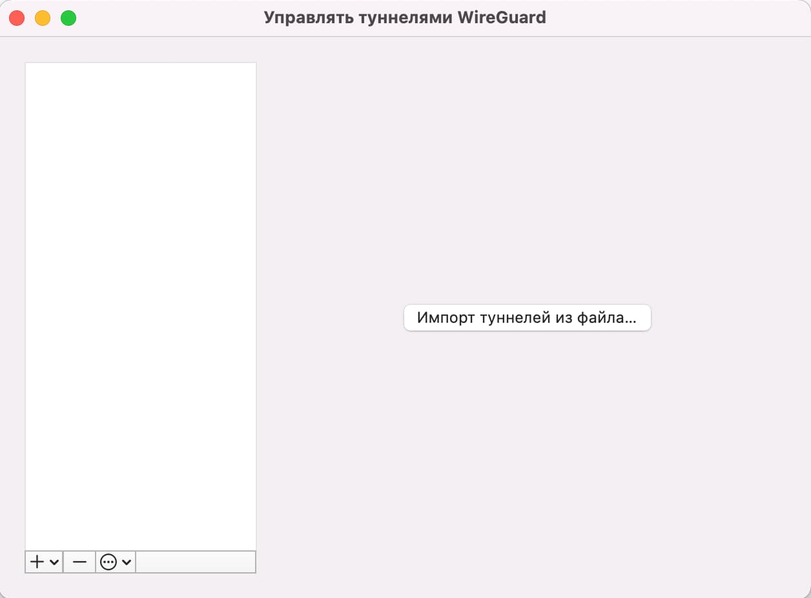
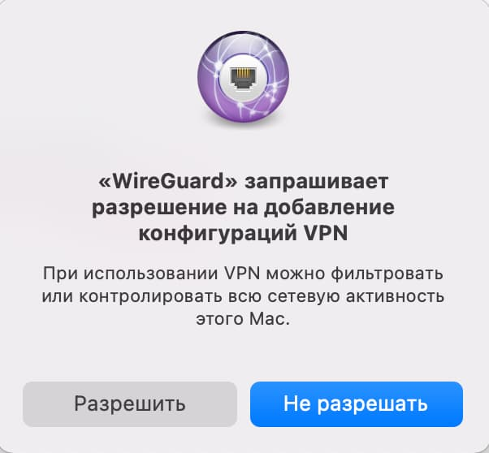

Настройка для MacOS
-
1. Загрузите приложение Wireguard из
официального сайта или AppStore.
-
2. Скачайте конфигурационный файл,
полученный в телеграм-боте.
-
3. Откройте приложение WireGuard и
выберите «Управлять туннелями Wireguard».
-
4. Нажмите кнопку «Импорт туннелей из
файла».

5. Выберите скачанный ранее
конфигурационный файл .conf. Далее
отобразится окно подтверждения на
разрешение конфигурации.

-
6. Выберите «Разрешить»
(конфигурационный файл будет добавлен в
исключения брандмауэра).
-
7. Готово. Для подключения к VPN нажмите
кнопку «Подключить».